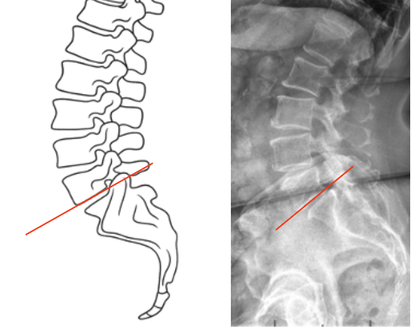

1) Description of Measurement
McNab’s Line is a radiographic assessment of the lumbosacral junction alignment, specifically evaluating the angular relationship between the inferior endplate of L5 and the superior surface of S1.
It helps identify abnormal segmental angulation or kyphosis at the L5–S1 junction, which may be associated with spondylolisthesis, disc degeneration, or segmental instability.
By analyzing the inclination of the L5 inferior endplate relative to S1, McNab’s Line provides insight into segmental lordosis, sagittal balance, and shear stress across the lumbosacral articulation.
2) Instructions to Measure
3) Normal vs. Pathologic Ranges
Key Point:
The L5–S1 segment contributes the greatest portion of total lumbar lordosis (~20–25°). Abnormal angulation here significantly affects sagittal balance and spinopelvic mechanics.
4) Important References
McNab I. Spondylolisthesis: Its Cause and Management. J Bone Joint Surg Br. 1950;32B(1):37–54.
Boxall D, Bradford DS, Winter RB, Moe JH. Management of severe spondylolisthesis in children and adolescents. J Bone Joint Surg Am. 1979;61(4):479–495.
Roussouly P, Gollogly S, Berthonnaud E, Dimnet J. Classification of the normal variation in the sagittal alignment of the human lumbar spine and pelvis. Spine. 2005;30(3):346–353.
Hresko MT, Labelle H, Roussouly P. Classification of high-grade spondylolisthesis based on pelvic balance. Spine. 2007;32(20):2208–2213.
Le Huec JC, Aunoble S, Philippe L, Nicolas P. Pelvic parameters: origin and significance. Eur Spine J. 2011;20(Suppl 5):564–571.
5) Other info....
McNab’s Line provides a localized assessment of L5–S1 segmental angulation, complementing global parameters like Lumbar Lordosis (LL) and PI–LL mismatch.
Anterior intersection often reflects segmental hypolordosis, disc collapse, or postoperative flat-back deformity.
Posterior intersection often indicates hyperlordosis or anterior shear, commonly associated with spondylolisthesis.
It should be measured on standing films to account for physiologic load-bearing alignment.
Clinical relevance:
Use in conjunction with Slip Angle, Ferguson’s Angle, and Pelvic Parameters (PI, PT, SS) for comprehensive sagittal analysis.
Low-dose EOS imaging or stitched lateral radiographs are recommended for improved precision and reproducibility.